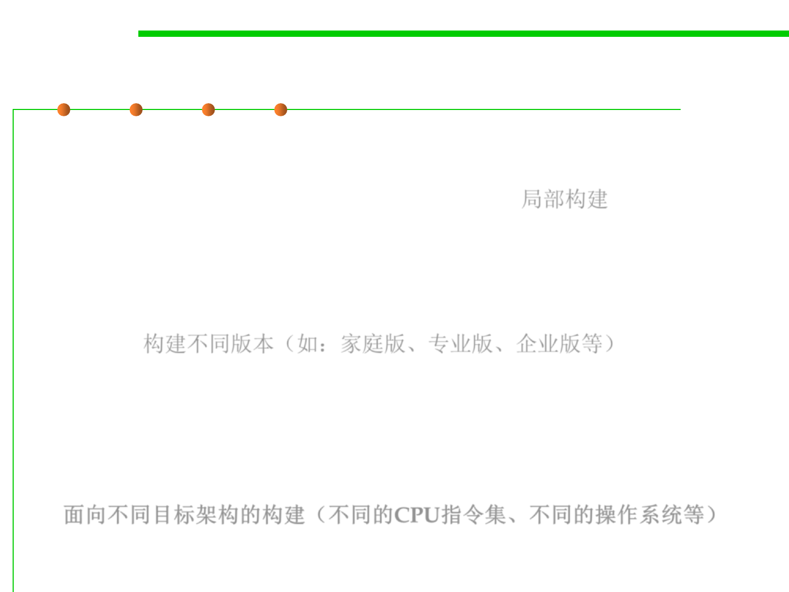

2.2 Process, Systems, and Tools of Software Construction
Three different ways of build
▪ Building subtargets: Developers who are making only incremental
changes to one part of the build tree prefer to rebuild only the
portion of the tree they’re actively working on. 局部构建
▪ Building different editions of the software: The output is
customized to vary the software’s behavior. These variations might
include support for natural languages or support for different
combinations of product features, such as a Home or Professional
edition. 构建不同版本（如：家庭版、专业版、企业版等）
▪ Building different target architectures: To support a software
product on different target machines, you must compile the same set
of source files for a variety of different CPU types and operating
systems. This includes CPUs such as x86, MIPS, and PowerPC, as
well as operating systems such as Linux, Windows, and Mac OS X.
面向不同目标架构的构建（不同的CPU指令集、不同的操作系统等）